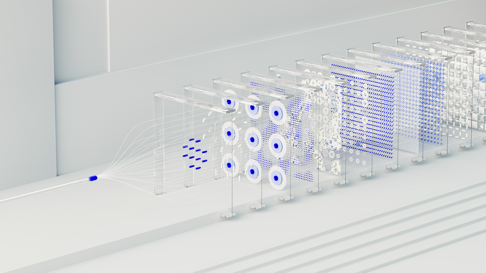

Distributed Whiteboard Application on Private Cloud
Jawad Mustafa - May 2, 2024
Introduction
This article will take the reader on a journey of the development to
deployment of a distributed whiteboard application on a tailored private
cloud. The reader will get to learn about the design thinking, decision
methods, implementation details, and a critical review of the project.
Github Code for Whiteboard App
Github Code for Kubernetes Deployment
Design and Technological Choices for the private cloud
Philosophy of the Design
The motivation for the design is to create a distributed system that is easier to scale and provides high availability. The philosophy of our design is that of a "BASE" system, where "BASE" stands for:
-
Basic Availability: The application and its data is available across multiple nodes, making it fault tolerant.
-
Soft state: The state of the system is changeable with respect to time. Due to this ease on consistency, the system is easily scalable without much networking and computational overhead.
-
Eventual Consistency: The system provides room for a window of inconsistency but eventually achieves a consistent state.
The reason for choosing a BASE system is that in case of a whiteboard application, the user experience will not be significantly affected by a small window of inconsistency. For example, two users "A" and "B" are having a discussion on Quantum Mechanics. User "A" writes Schrodinger’s equation on the board, and user "B" received it 5 seconds later. This will not cause serious performance issues or critical faults. Therefore, a sacrifice on part of consistency will enable us to build a cloud that is easily scalable and highly available.
In light of the "CAP" theorem, we are aiming to offer "AP"; Avaialability and Partition tolerance.
The Design and Technological Choices
The architecture diagram below provides an overview of the architecture of the private cloud and how it could host a whiteboard application on it. Bear in mind, that the cloud has been tailored in such a way that it best suits the needs of the whiteboard application.
.jpg)
Network Topology
The cloud is divided into two major network segments, the public and private subnets. The user can access the private subnet via the network bridge, that connects him to the private network. Inside the private network, are provisioned three virtual machines that have been interconnected via NAT gateway to form an internal network for the virtual machines to communicate through. The traffic is mostly ’EAST-WEST’ in this region.
Container Orchestration and Consensus
As mentioned in the philosophy of the architecture, we are aiming for a distributed environment. Stateless compute is the best suited component for a distributed system. Therefore, we have chosen kubernetes for container orchestration where the application pods contain standalone stateless backend application for whiteboard to avoid any coupling between the distributed containers.
The application pods are distributed over the three nodes; Master node, worker node 1, and worked node 2, in a replica set. In addition to that, there is a redis pod which is responsible for maintaining the state of the application. Each pod writes its state on its own machine, and after every 5 seconds communicates that to the redis pod and makes its state consistent with that of redis. This enables eventual consistency in the system.
Kubernetes does the heavy lifting of ensuring that traffic is directly to healthy routes. For ensuring consensus, Kubernetes uses the Raft Consensus algorithm . Kubernetes deploys a cluster of etcd nodes. Each etcd node is part of the cluster and maintains a copy of the distributed key-value store. The etcd nodes use the Raft consensus algorithm to achieve consensus on the state of the distributed key-value store. Raft ensures that all nodes in the cluster agree on the current state and can recover from the failure of some nodes.
Disaster Recovery
The snapshots of the virtual machines should be saved to ensure easy recovery in case of a disaster. New virtual machines can be instantly spun up, ensuring high availability.
Implementation Details
Available Options
The opportunity to implement the private cloud proposed in the previous section was offered by many platforms. However, the following key factors were used to determine which platform to use:
Cost
Resources
Learning Curve
The two most popular options; AWS and Azure, checked on the last two items; Resources and Learning cover, however, they proved to be costly. The free tier version was too limited to experiment with multiple options and gave very less flexibility.
On the contrary, tools like openstack and microstack were handy in terms of cost because they are open source, but they lacked in the other two dimensions. The minimum requirement for openstack was 16gbs ram, 4vCPUs and 50GBs of SSD storage. Having a steep learning curve, openstack only checked the Cost factor.
Unsuccessful Attempts
We tried implementing using openstack by optimizing the usage of our hardware resources, but still we weren’t able to produce positive results. Similarly, we also tried using AWS EKS to host the architecture, but the free-tier version provided us with very limited flexibility.
Making a choice
On the other hand, Kubernetes checked two factors; Cost and Resources. Kubernetes is an open source cloud orchestration platform, that can be deployed on any VM. We used virtualbox to deploy the virtual machines required for the deployment of the cluster. The reason for using virtualbox, a type 2 hypervisor, over any other type 1 hypervisor is that it is more robust and easy to setup on most of the operating systems. This enables easier communication amongst group members and sped up the development process.
Vagrant was used to provision the virtual machine and to create the network topology. The reason behind using vagrant was to make sure it is easier to automate the workflow and reduce human intervention when it comes to spinning up more instances. Another selling point of Vagrant is that it allows you to store snapshots that could be used for disaster recovery.
The Implementation
All the deployment related files can be found in the following git repository
Network Topology
The configuration for the network topology was setup in the Vagrant file. This included installation of NAT gateways on each virtual machine to enable inter-nodal communication. Additionally, port forwarding is enabled on port 22 so we could ssh into the virtual machines. Later on, we just forwarded port using the virtualbox User Interface on need bases.
Cluster Deployment
After that, on the master node, kubernetes cluster’s deployment is set up. The deployment.yaml file below is used.
The two noteworthy mentions about the deployment file are the "replicas" and "image" keys. In the former, we can specify the replica sets. The number of replicas is proportional to the number of users, so they could be increased with minimal human intervention. Secondly, the "image" key holds the dockerhub image of our whiteboard application.
The latest redis image is depoyed by creating a deployment and exposed using a service. Inorder to inject the environment varialbes, that contain the IP address of redis pod as well, a config map is created which is attached to the deployment.yaml.
Deployment of a newer version of the application
If you want to deploy a new application version, all you have to do it change the tag of the image name in deployment.yaml file and redeploy using "kubectl apply -f deployment.yaml" on the master node.
Workflow
Whenever the user connects, he is directed to a healthy pod by the kubernetes load balancer. Inorder to achieve eventual consistency, each node updates itself with redis’s state every 5 seconds. This delay ensures that the network overhead is reduced. While it increases network latency, but that has minimal impact on user experience as explained in the philosophy of the design section.
Monitoring
For the monitoring of the cluster, we have used Prometheus. Prometheus is an open-source tool that seamlessly deploys on kubernetes and provides insight into serveral factors including but not limited to compute, memory usage and network utilization of the pods. Additionally, it also provides with alerts regarding the health of pods. You can find an example of network monitoring in Figure 5.
Whiteboard Application Design
Key Features
The whiteboard application offers the following features:
Multiple users can join the session to see the same state
-
Users can use basic drawing features such as pencil and line, as well as draw shapes
Users can view each other’s progress in real-time
Architecture
As you can see in Figure 6, it is a 2-tier architecture based on client and server. The server hosts the socket to enable users to make connections. Apart from that, it is also a host to the redis client which in turn connects to redis service. A timed process is setup inside express framework that ensures that updates are retrieved and sent to redis every 5 seconds.
Resource Lock
Inorder to ensure that only one node writes at a time on redis server, a resource lock is initiated before a node makes a transaction. Once the transaction is complete, the lock is released. There is a timeout set to the lock to avoid a deadlock.
Techstack
Backend
Node and Express (JS) are used to create APIs and sockets on the server side. The reason behind choosing the aforementioned is that they are developer friendly and once we make this opensource, we can have a bigger community of developer working on it. Additionally, it has a shallower learning curve, as it enables us to produce an all javascript application; from frontend to the backend.
Frontend
We have used Vite to develop the frontend of the application. The frontend can be bundled and deployed anywhere, even on serverless services like AWS s3, Vercel or github pages. Deployment of the frontend is beyond the scope of this project.
Demonstration
Group Video link
To watch the group presentation, click here or paste the following link in
your browser:
presentation
Critical Review
Strengths and Weaknesses
The distributed whiteboard application can host a high number of users because of its ability to distribute the load onto three nodes. Additionally, due to controlled communication between nodes, the network overhead has been reduced and thus, making the application scalable. For example, due to the 5s delay the redis server has to deal with 240 requests per minute; (60/5 * 2 * 10 = 240), where (60/delay_in_seconds) gives you the number of updates per minute. We multiply that by 2 because each update requires one read transaction and one write transaction. At the end, we multiply it with the number of nodes "n". Consider the following example:
1. When n = 10 and the delay in seconds is 5:
$$\text{Value} = \frac{60}{5} \times 2 \times 10 = 12 \times 2 \times
10 = 240$$
2. When n = 10 and the delay in seconds is 1:
$$\text{Value} = \frac{60}{1} \times 2 \times 10 = 120 \times 10 =
1200$$
As you can observe, that increasing the delay has had a positive impact on making the application more scalable by reducing the number of reads and writes.
Another strength of our application is the fact that Kubernetes is an open source container orchestration tool, which has opened the possibility of a wide developer community to collaborate on the project and make improvements.
On the downside, there are certain things that could have been better. Firstly, our application is distributed but not decentralized. There is still one master node where all the updates are eventually written. We couldn’t have implemented it because of hardware limitations. Secondly, the deployment of the application is not automated, nor is the monitoring set to update about automated alerts. Thirdly, user session is not saved in a persistent database and therefore there is no user authentication system.
Improvements and Future Work
In order to take this project one step further, the following steps could be taken:
-
Use a resourceful server to create a distributed replica set for master node using atleast two nodes, and design a consensus mechanism to ensure they stay updated with each other’s state.
-
Use Github actions to automate the deployment process by initiating automatic build upon pushing on the main branch.
-
Create a database that is external from the kubernetes cluster. This to ensure separation of concerns so that the data is secure and safe in a separate isolated environment. Write a cron job to read data from redis and update in the database every hour. Make sure, that users are directly registered to the database, because we cannot afford a delay in the registration and signin of users.
-
If you want to go a step further, deploy openstack on the latest Raspberry Pi, and use kubernetes to orchestrate the container network on it. This way you will be able to build another layer of abstraction over Vagrant.
-
An optimization of the private cloud to speed up compute and improve network latency is to use a type-1 hypervisor like KVM. This would affect the flexibility but would give you a higher performing cloud.
Conclusion
In this project article, we looked at end to end development and deployment of a distributed whiteboard application. It involved an in depth insight regarding the design thinking used to implement the solution, and at the very end we evaluated possible improvements in future and how we could start with them. To conclude, a distributed whiteboard application can prove to be more scalable and available as compared to a whiteboard application hosted on a single consolidated server.